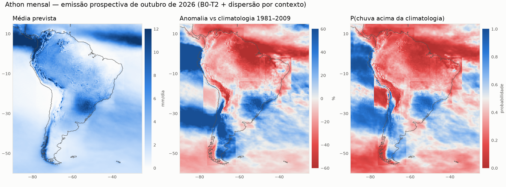
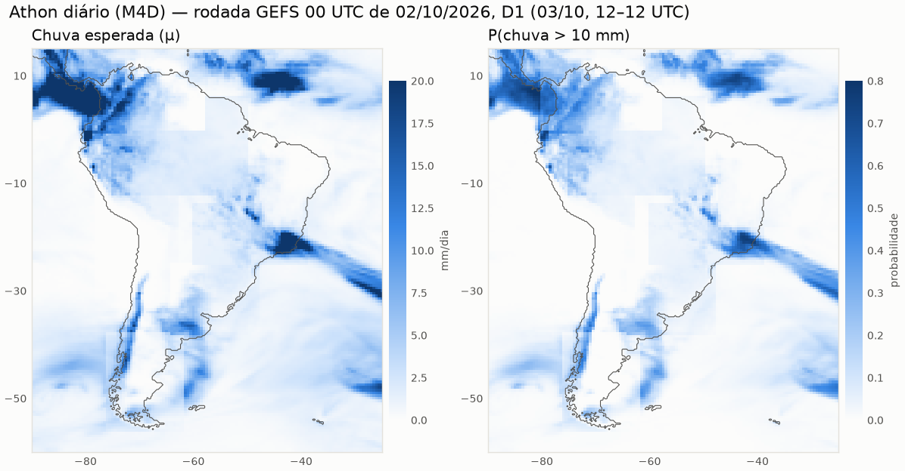
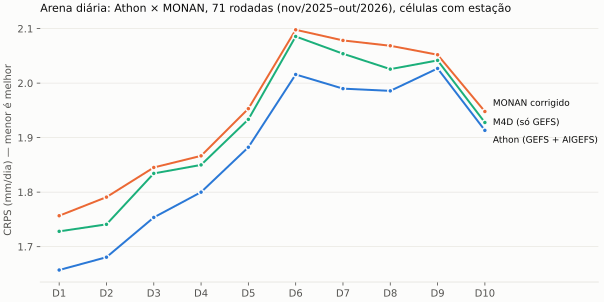
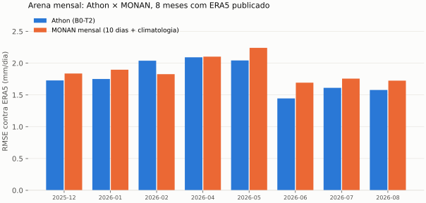
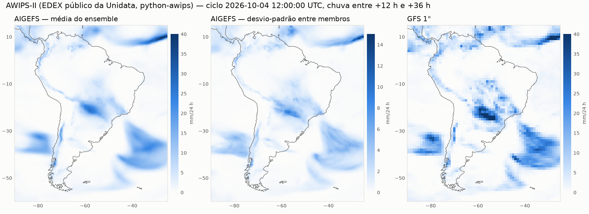

Athon NoLimit
Previsão de precipitação sobre a América do Sul em duas escalas: média mensal (0,25°) e chuva diária de D0 a D10 (0,5°). Origem no WorCAP 2026 (S6R, 1º lugar). O estudo pós-competição usa contrato operacional estrito, validação pré-registrada e confronto direto com o MONAN.
fluxo


Mensal
- Estado ERA5T de T−2, CFSv2 lead 1,5, GEFS da última quarta e SEAS5 lead 1,5 (51 membros).
- Base O09M-T2: NNLS de EOF atmosférico, regressão por célula, climatologia de 30 anos e CFSv2, mais correção GEFS.
- B0-T2: S6R causal, base + Σ W(região, estação)·cₖ (LightGBM no resíduo, ridge H6, MOS do SEAS5).
- Hurdle-Gamma com média no B0-T2; k e p0 por rede de contexto.
- Schaake/ECC: 51 cenários espacialmente coerentes.
Diário
- GEFS, AIGEFS, GraphCastGFS, MONAN, GOES e climatologia MERGE.
- Acumulados de 6 h em janelas 12–12 UTC, agregados por área em 0,5°.
- Hurdle-Gamma por lead × região × estação.
- D0: GEFS 12 UTC da véspera + chuva GOES até a emissão.
- Schaake com campos MERGE passados.
modelos
| Modelo | Escala | Função | Estado |
|---|---|---|---|
| B0-T2 | mensal | S6R causal sobre a base com estado de T−2 | operacional |
| M1-C | mensal | dispersão por rede de contexto | promovido |
| Schaake / ECC | mensal e diário | dependência espacial dos cenários | promovido |
| M4D | diário | cabeça hurdle-Gamma sobre o GEFS | promovido |
| Athon diário | diário | mesma cabeça sobre GEFS + AIGEFS | melhor diário |
| GG0 | D0 | GEFS 12 UTC da véspera + GOES | promovido |
| M1-A | mensal | rede sobre os membros do SEAS5 | −0,39% |
| M2 / SOL | mensal | solo, energia, QBO, MJO, F10.7, geometria solar | nulo |
| M3 | mensal | pré-treino CMIP6 | sem ganho sobre o B0 |
| M4-A/C | mensal | transporte de umidade do GEFS | ≤ 0,06% |
| M5 | 0,1° | refinamento conservativo (U-Net, flow) | só diagnóstico |
Hurdle-Gamma com média fixa: θ = m / ((1 − p0)·k), de modo que a dispersão é treinada sem alterar a média; CRPS em forma fechada. Por que T−2: o ERA5T de T−1 sai depois da emissão. Por que o placar não se repete: o S6R usava o SEAS5 lead 0,5, publicado após o início do mês (1,5527); com o lead disponível, 1,70.
resultados

Mensal (RMSE, mm/dia)
| Avaliação | Base T−2 | B0-T2 | Contraste |
|---|---|---|---|
| Desenvolvimento 2013–2024 | — | 1,7063 | proxy T−1: 1,7026 |
| Bloco cego 2025-01..2026-06 | 1,7523 | 1,7125 | −2,27%, IC95 < 0 |
| Emissão 2026-07 | 1,672 | 1,612 | −3,6% |
| Emissão 2026-08 | 1,673 | 1,579 | −5,6% |
| Bloco cego contra MERGE | 2,689 | 2,668 | −0,8%, IC95 < 0 |
Diário (CRPS, mm/dia, células com estação)
| Lead | Climatologia | GEFS bruto | M4D | vs GEFS |
|---|---|---|---|---|
| D1 | 2,225 | 2,466 | 1,880 | −23,7% |
| D5 | 2,249 | 2,652 | 2,063 | −22,2% |
| D10 | 2,217 | 2,827 | 2,179 | −22,9% |


athon × monan
MONAN global 10 km (INPE), precipitação em grade de 26/11/2025 a 02/10/2026, lida por faixa de bytes no recorte da América do Sul. Verdade MERGE 0,5° no diário; ERA5 e MERGE no mensal.
Athon vence
9 de 10 leads contra o MONAN corrigido pelo mesmo MOS (−1,8% a −6,2%); metade do erro do MONAN bruto; vence nas 8 regiões em D1.
Athon à frente, empate estatístico
ERA5: RMSE 1,801 contra 1,894 (−4,9%, 7/8 meses); IC inclui zero com 8 meses. MERGE: empate. A rodada do MONAN usada sai depois da emissão do Athon.
| Lead | Athon | MONAN corrigido | MONAN bruto | M4D | Athon vs MONAN corrigido |
|---|---|---|---|---|---|
| D1 | 1,657 | 1,757 | 3,113 | 1,728 | −5,7% |
| D3 | 1,754 | 1,845 | 3,515 | 1,834 | −5,0% |
| D5 | 1,882 | 1,953 | 3,964 | 1,934 | −3,6% |
| D7 | 1,990 | 2,078 | 4,306 | 2,054 | −4,3% |
| D10 | 1,913 | 1,948 | 4,481 | 1,928 | −1,8% |



awips-ii
O AWIPS-II, distribuído pela Unidata, reúne o EDEX (ingestão por LDM, decodificação e serviço de dados), o CAVE (visualização) e o python-awips (acesso programático). O painel abaixo é gerado com python-awips a partir do EDEX público: ciclo mais recente do AIGEFS (média e espalhamento) e do GFS.

O EDEX público guarda poucos ciclos e serve ensembles de IA só com média e desvio-padrão. Para treino e avaliação, o Athon lê os mesmos modelos com membros e histórico direto do AWS Open Data NOAA EAGLE.
técnicas
Validação
- Contrato de emissão com instante de publicação de cada insumo.
- Dobras cronológicas expansivas; seleção interna cronológica.
- Pré-registro com sha256 antes de qualquer métrica.
- Bloco cego aberto uma vez; emissões registradas antes da verdade.
- Bootstrap por blocos contíguos.
Probabilidade e engenharia
- CRPS fechado da hurdle-Gamma; CRPS justo para ensembles; PIT aleatorizado.
- ECC e Schaake shuffle para dependência espacial.
- Leitura parcial de GRIB (índice e cabeçalhos) e de HDF5 remoto (faixa de bytes).
- Execução exclusiva (mutex + Job Object) e escrita atômica de artefatos.
discussões
- Média mensal perto do limite das fontes testadas: membros, solo, Sol, CMIP6 e transporte não acrescentaram ≥ 0,5% ao B0-T2.
- Dispersão específica do alvo: contra ERA5 o contexto ganha 7%; contra MERGE a dispersão constante é melhor.
- IA no diário: GraphCastGFS e AIGEFS superam o GEFS (brutos −8% a −14%; corrigidos −1% a −6%).
- MONAN: viés úmido bruto; corrigido empata com o GEFS; combinado acrescenta 1–3%.
- Refinamento 0,1°: aprendível com total observado, sem ganho com total previsto.
- Astronomia: maré lunar M2 detectada na chuva horária (0,42%, p = 0,005), irrelevante na escala diária e mensal.
- Limites: confirmação prospectiva com 2 meses avaliados; validação cruzada por mês nos duelos diários; ~10 meses de MONAN.
reprodução
# mensal
python -m src.emissao.mensal insumos --alvo 2026-11
python -m src.executa_cadeia runs/cadeia_emissao.sh runs/cadeia_emissao_202611.log 2026-11
python -m src.emissao.avalia
# diário e duelos
python -m src.models.diario_m4
python -m src.verification.duelo_multimodelo
python -m src.verification.duelo_athon_monan diario
python -m src.verification.duelo_athon_monan mensal
# site
python -m src.site.awips_painel
python -m src.site.figuras --saida docs/assetsCódigo, pré-registros e relatórios: github.com/Brun0Simoes/Athon_NoLimit.